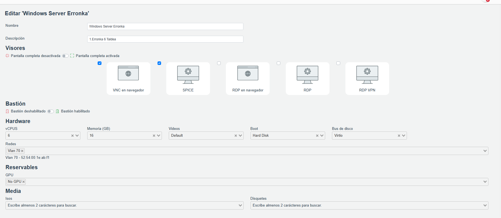
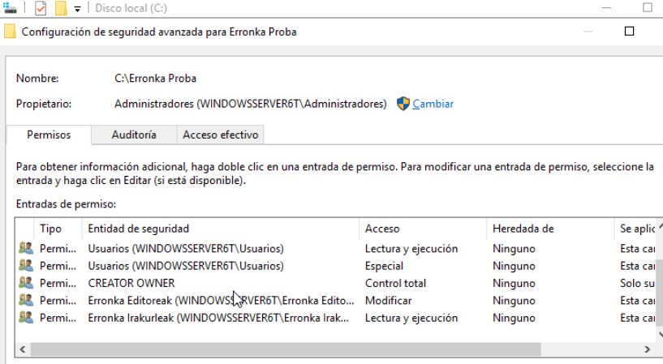
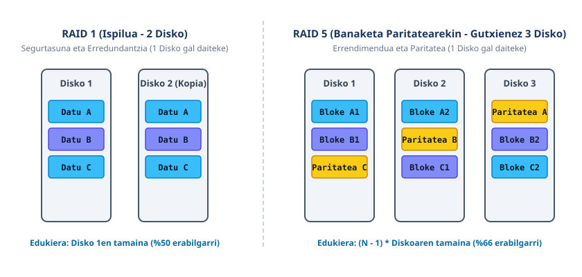

Windows Server 2019, Erabiltzaileak eta RAID
IsardVDI-n WindowsServer6Taldea (192.168.70.2) zerbitzariaren konfigurazioa: tokiko erabiltzaileak, segurtasun-politikak, NTFS baimenak, RAID bolumenak eta Windows Backup.
1. IsardVDI eta WindowsServer6Taldea
IsardVDI plataforman Windows Server 2019 makina birtuala prestatu dugu:
Hardware Birtuala

1. irudia: 6 vCPU, 16 GB RAM, Vlan 70 eta Virtio diskoa.
Sare Konfigurazioa

2. irudia: IPv4 estatikoa (192.168.70.2, Gateway 192.168.70.254).
2. Erabiltzaileak, Taldeak eta NTFS Baimenak
Sortutako Erabiltzaileak eta Taldeak:
- Editorea:
Erronka Editoreaktaldekoa (Modificar baimena). - Irakurlea:
Erronka Irakurleaktaldekoa (Lectura y ejecucion). - Pasahitza:
Admin_123bi erabiltzaileentzat.
Segurtasun Zuzentarauak (secpol.msc):
- Gutxieneko luzera: 8 karaktere • Konplexutasuna: Gaituta.
- Indarraldia: 90 egun • Historiala: 24 pasahitz.
- Blokeo-muga: 10 saiakera oker • Iraupena: 15 minutu.

3. irudia: NTFS baimen aurreratuak (aurrerago RAID bolumenera pasako da).
3. Disko-Kudeaketa eta RAID Arkitektura

4. irudia: RAID 1 (Ispilua) eta RAID 5 (Paritatea) arkitekturen diagrama.
RAID 1 (Ispilua - Mirror)
- Bi diskotan datu berdinak aldi berean (% 50 erabilgarri).
- Disko bat hondatzea jasaten du; webgunea hemen gordeko da.
RAID 5 (Paritate Banatua)
- Gutxienez 3 disko behar ditu (% 66 erabilgarri 3 diskorekin).
- Irakurketa azkarra eta paritate bidezko segurtasuna eskaintzen du.
4. IIS Web Zerbitzaria eta Firewall
Webgunea IIS bidez zerbitzatzen da (80 ataka HTTP, 192.168.70.2). Sarrerako araua PowerShell komandoz gaitu da:
5. Windows Server Backup eta Berreskuratzea

5. irudia: Windows Server Backup eginbidearen instalazio arrakastatsua.
Berreskuratze Prozedura: index.html ezabaketa simulatu da; babeskopiatik fitxategia segundotan leheneratu da datu-galerarik gabe.